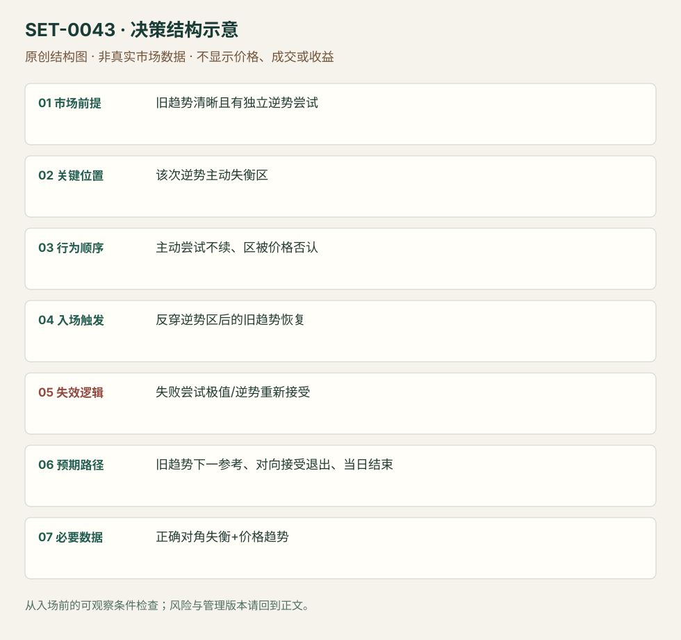

逆势主动失衡失败后的顺势回归
Failed Countertrend Imbalance Trap · SET-0043 · reviewed · v1.0.0
盈利证据：not_established。审查范围与来源版本见第13节；未知字段保留缺失原因。
1. 名称与快速概览
旧趋势中的逆势恢复出现明显主动失衡，却无法推进；价格反穿该次逆势失衡区后，交易旧趋势恢复。不是失衡区保持的0042，也不以所有大量成交无推进都算本条。
记录口径：PA non_primary；必要数据 diagonal_footprint、bid_ask_classified_trades、OHLC。名称性质：编辑性描述名，英文保留来源术语以便检索。reviewed 只表示本条规则与证据记录审查通过，盈利状态为 not_established。
2. 本质与行为假说
逆势主动参与在错误位置失败可能随后退出是行为假说；必需先有旧趋势、一个可识别的逆势主动尝试与其区域被否认。参与者是否仍持仓不能直接看到。
3. 适用市场与环境
来源RIH9下降中的绿色主动买入失败/上升中的卖入失败。没有既有方向、只是范围中颜色交替，不能强行定义逆势陷阱。
来源实用市场：RTS指数期货 RIH9、加密合约（辅助讨论）。
Session：RTS源图盘中，时区/完整日段未知；实际复盘按当地合约session定义，结束前平仓。
跨市场：本版不主张已经验证的跨市场迁移；更换市场必须重定数据来源、流动性与session。
4. 出现前的观察清单
固定旧趋势结构、逆势恢复端、对角失衡设置和区域上下缘；保存首次主动尝试时的图。不能根据随后下降把任何绿色格追认“被困”。
5. 形成过程与状态转换
旧趋势 → 逆势恢复主动失衡 → 价格不能继续恢复 → 返回并反穿主动区 → 原趋势方向成交/价格恢复 → 趋势延续或新逆势接受。
6. Entry trigger 与执行方式
来源把失败区作参考，编辑触发为反穿该区并越过近端原趋势恢复点。逆势失衡刚出现时只观察，不能在当时无失败证据提前宣称trap。
7. Invalidation 与止损逻辑
失败尝试极值外，或价格重新进入并接受逆势区域；持续新的逆势失衡推进意味着原趋势可能改变。初始缓冲由产品数据确定。
8. Exit、target 与 trade management
原趋势下一个先验枢轴/拍卖参考；反向主动区持续并得到价格确认则减仓。价格恢复但速度不续时防止把它当必到新低/新高。计划session结束前平仓。
9. 常见 variations
stuck long/short对称一个主记录；红绿换色与比率修改不新增。纯价格逆势趋势棒失败0017不要求失衡区，此处额外数据是核心证据。
10. 失败方式与不交易条件
无旧趋势；逆势主动量正在持续推动新接受；只看delta正负不看位置；零分母的巨大失衡；同场所价量不一致；损失后改说它是吸收。
11. 与相近 setups 的区别
12. 图表与案例解读
已看RIH9图，能核旧方向、两个逆势绿区和随后回落；最后绿色量仍存在，故不能删除潜在反向信号。图日期字段模糊，未补猜。
- [VIS-000046] Imbalance and loss-making traders；定位：How to identify stuck traders。下降背景中的绿色逆势主动区域被返回，黑线为失败参考；末端再次绿量也提示不能无条件持空。 验证：chart_viewed。

本地原创示意（VIS-000100，非真实市场数据）：

小屏阅读可打开原尺寸示意图并缩放。

此图用于对照识别顺序与风险定义；不计入真实案例覆盖率。
视觉材料元数据与查看范围
- VIS-000046 · real_source_chart / structure_and_trigger / chart_viewed
品种：RTS RIH9；日期：未知/不适用；周期：1/10 reversal chart；时区：未知/不适用
日期未在图中核对；时区未在图中核对；来源图表不是成交审计 - VIS-000100 · synthetic_structure_diagram / illustration_only / generated_not_market_evidence
品种：未知/不适用；日期：未知/不适用；周期：未知/不适用；时区：未知/不适用
无真实品种、日期或价格：这是结构示意
13. 证据、分歧与未知项
ATAS同家族，独立佐证有限；作者声称识别大资金只属推论。未核对交易者持仓、未复现收益。
- [EVD-000086] Danil Solovyov，《Imbalance – what is it? How to trade imbalance.》，SRC-0035；定位：How to identify stuck traders: trend correction examples。支持：既有趋势的逆向回调中主动买/卖失衡未能延续，返回失衡区后原趋势恢复；对向失衡持续则警惕趋势变化。
- [EVD-000087] ATAS Team，《An imbalance. Did you know that size matters?》，SRC-0036；定位：aggressive buyers can be trapped / imbalance context。支持：同家族强调主动量与价格响应必须结合，颜色不能自动决定趋势。
审查边界：来源份数与独立核心核验分开；当前类别为 limited_single_family。正文中的概念、官方事实、衍生解说或同族资料只按其支持范围使用。
14. 可用于复盘的检查表
- ☐ 下单前的前提可核对：旧趋势清晰且有独立逆势尝试
- ☐ 事前标记位置：该次逆势主动失衡区
- ☐ 行为按顺序出现：主动尝试不续、区被价格否认
- ☐ 实际触发符合选定版本：反穿逆势区后的旧趋势恢复
- ☐ 事先写明本次否定条件：失败尝试极值/逆势重新接受
- ☐ 目标/路径只用当时已知信息：旧趋势下一参考、对向接受退出、当日结束
- ☐ 数据满足 正确对角失衡+价格趋势；记录时间、点差、滑点、队列和未成交
- ☐ 记录截止平仓及规则偏离；正常亏损不事后改成“未成立”
15. 后续验证问题
失败区反穿相对仅看价格恢复有新增信息吗？旧趋势定义怎样前瞻固定？极端逆势delta何时反而是趋势改变？
双向相关导航
- SET-0024 VWAP 穿透、偏离失败与回测 0043 用明确失败的对角失衡区做原趋势；本条规定均价穿透与二次偏离，不必须堆叠失衡。
- SET-0042 堆叠对角失衡区的保持与再推进 0043 堆叠主动方本身失败，越回区后交易反方向；本条要求区保持而继续。
- SET-0003 关键位置吸收后的反转 0003 从大量成交无推进看反转；本条必须特定逆势区被反穿并恢复旧趋势。